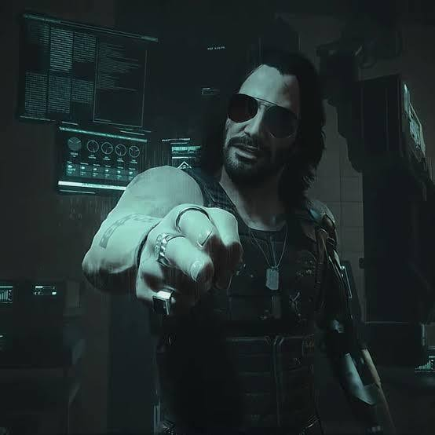
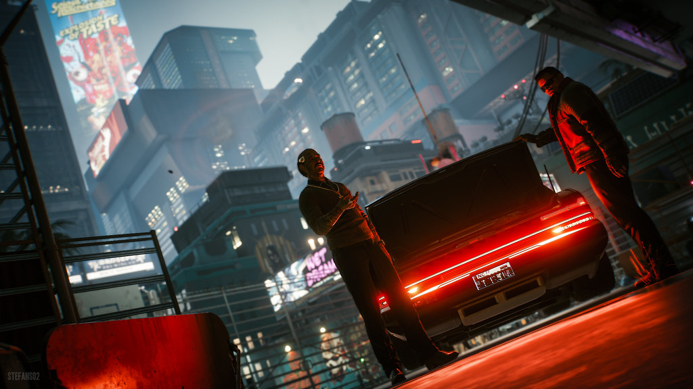

Weapons

Cyberpunk 2077 is a video game developed by cd projekt red and is one of my favorite games of all time. love how much time and effort they put in it. They show it by how good the charaters are when you interact with them and the world
Night city is a where some people dreams come to die and others come to find a new start. In this life path V grew up in heywood but left to atlanta after years of no change V came back to night city to find the bar keep pepe is in debt to kirk.So V makes a deal with kirk to steal a super car for him to clear pepes debt

other than the backstory the street kid path has speical